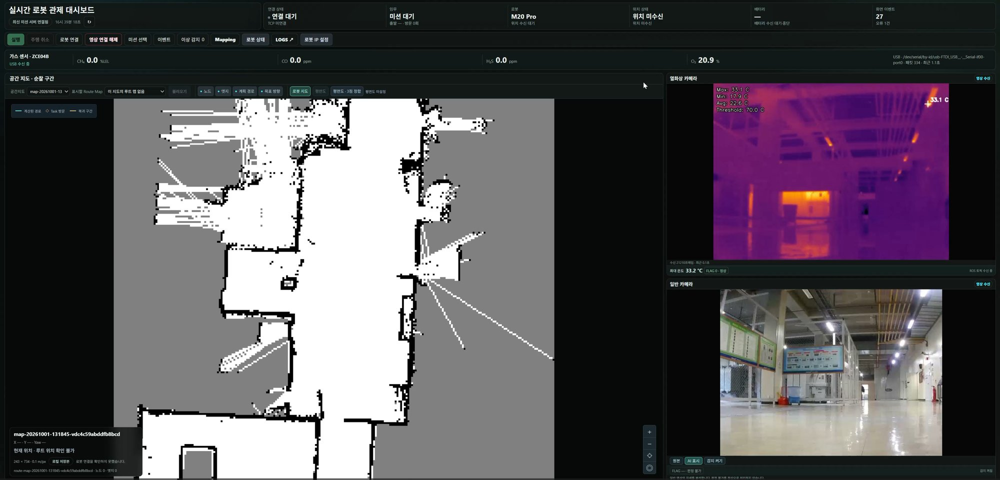

피지컬 AI
로봇 운영 서버
사족보행 로봇(M20 Pro)을 연결해 순찰 미션을 내리고, 로봇이 만든 공간 지도와 카메라·센서 데이터를 실시간으로 확인하는 관제 대시보드를 만들었습니다.


- 공간 지도와 순찰 경로
- 로봇이 주행하며 만든 공간 지도 위에 순찰 경로와 점검 지점을 표시합니다. 지도는 이름을 붙여 저장하고 다시 불러올 수 있습니다.
- 미션 기반 순찰 운영
- 로봇 연결, 미션 선택, 실행·취소를 대시보드에서 바로 할 수 있습니다. 연결 상태, 현재 임무, 위치, 배터리를 상단에서 한눈에 봅니다.
- 열화상·일반 카메라 실시간 영상
- 열화상 카메라는 최고·최저·평균 온도를 함께 보여줘 과열 지점을 찾는 데 활용합니다. 일반 카메라 영상에는 AI 감지 결과를 겹쳐 볼 수 있습니다.
- 로봇 탑재 가스 센서
- 로봇에 연결한 가스 센서로 메탄, 일산화탄소, 황화수소, 산소 농도를 순찰 중에 실시간으로 측정합니다.
- 점검 서버와 연동
- 운영 서버가 수집한 영상과 센서 데이터는 로봇 시설물 점검 서버로 넘어가 AI 점검과 기록에 쓰입니다.